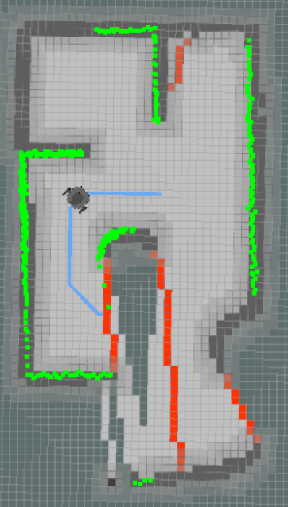
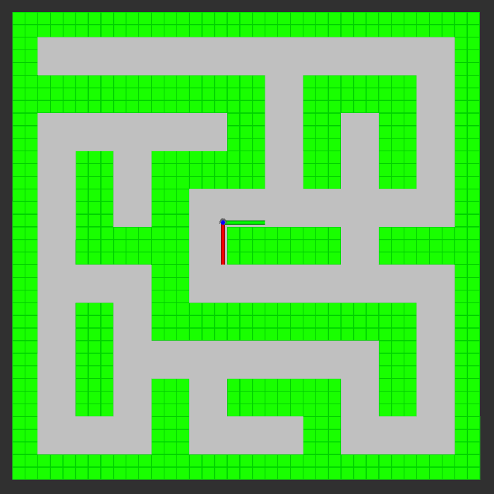
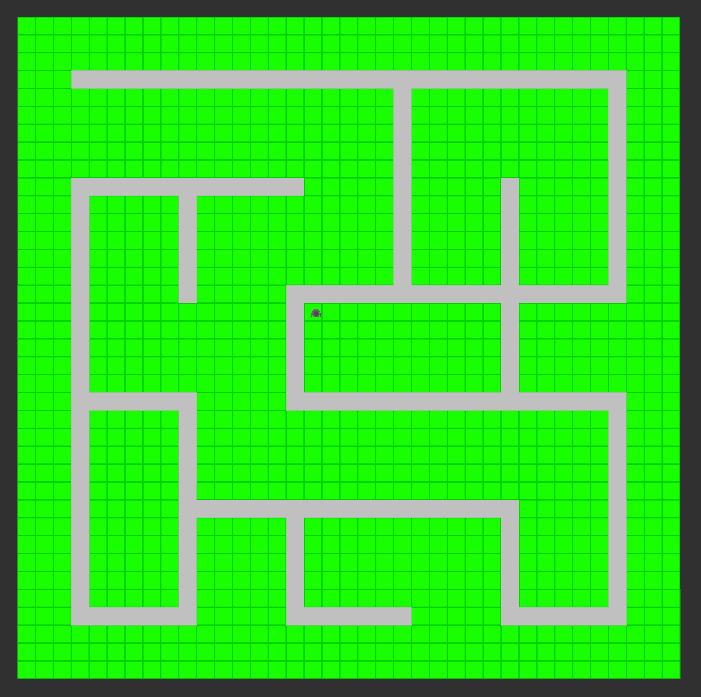
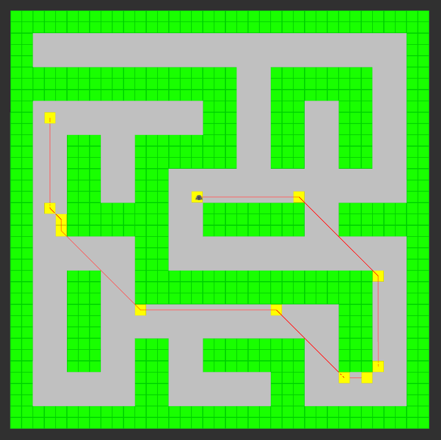
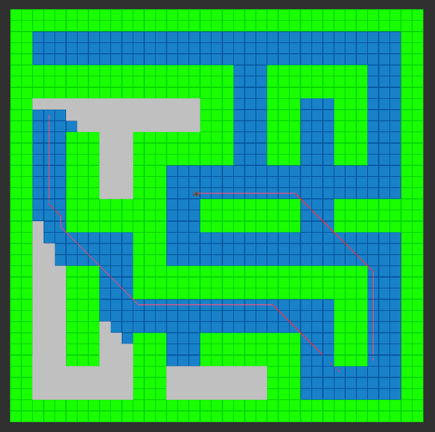
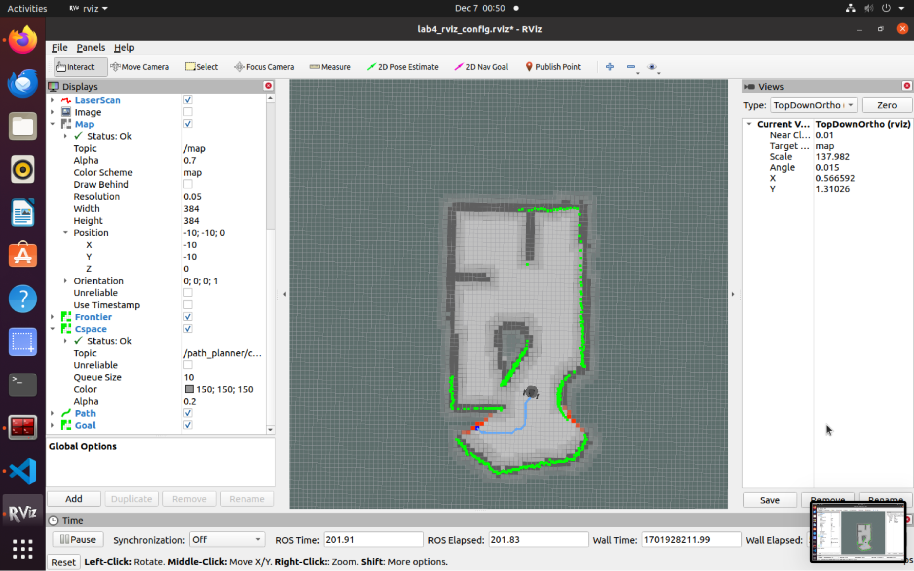
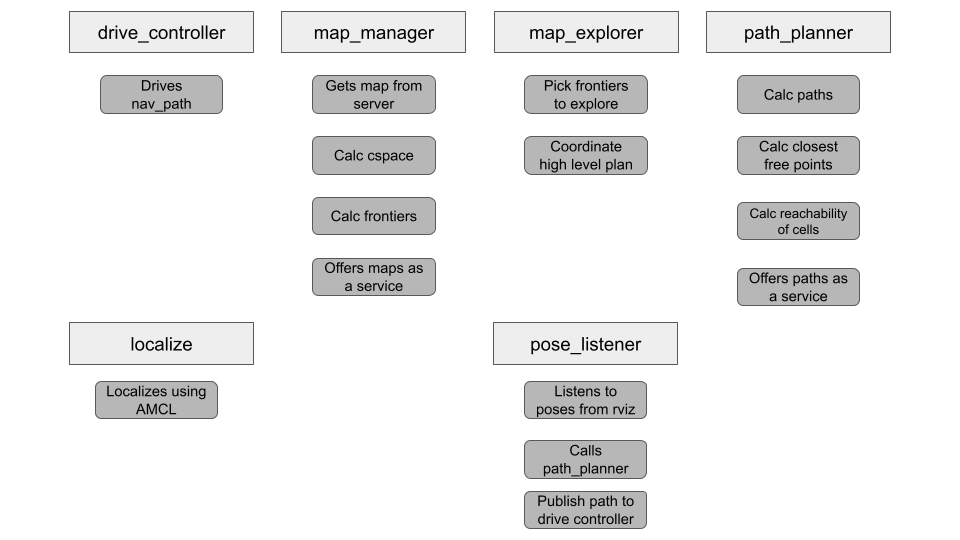
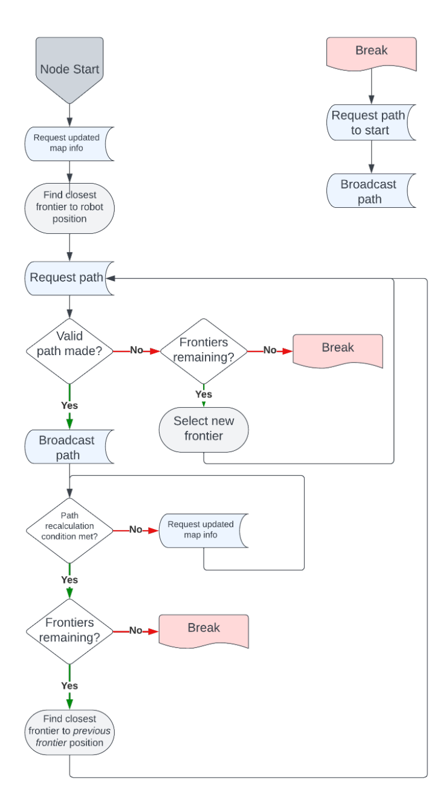

Navigation
Description
The primary objective for this project was to develop software necessary for a Turtlebot to map, localize, and navigate an unknown maze autonomously. Specifically, the Turtlebot had to be able to perform the following:
- Localize itself in the maze.
- Traverse the maze while avoiding obstacles.
- Identify frontiers of exploration to navigate to explore and map the entire maze.
- Navigate back to any point in the map.
These goals were divided into three phases. Phase 1 involved exploring and mapping the unknown maze, Phase 2 involved navigating back to any point throughout the maze, and Phase 3 involved the robot localizing itself after being “kidnapped” to any given point in the maze. To accomplish this, we combined and adapted key functionality developed in previous labs, such as A* pathfinding, C-Space calculation, and drive control. We combined these features into a single project, and then we integrated new functionality, such as frontier detection, mapping, and localization. Each of these functionalities proved necessary for the goals of the project.
Execution
 We used ROS to implement key functionality with the goal of allowing our Turtlebot to efficiently navigate from any point on a given map to any other. We implemented C-Space calculation to determine the areas the robot can traverse, A* pathfinding to allow the robot to find and follow the optimal path through this space between any two points, and trajectory optimization to simplify the path produced. The effectiveness of this functionality is crucial, as it will serve as a base for more complex functionality later on in the project.
 Above you'll see our A* wavefront and path generation optimized to minimized extraneous movements.
The solution implemented for the final demonstration of this project makes good use of the ROS system for node-based computation. That is, we had multiple nodes running in parallel communicating through various topics. Originally, our architecture was comprised of three nodes: map_explorer, drive_controller, and path_planner. Based on feedback from our preliminary design review (PDR) and issues with computation speed, the map_explorer node was reduced in functionality. Its displaced tasks were sorted into the new map_manager node and preexisting path_planner and drive_controller nodes. Figure 1 visualizes the functionality division:
The map_explorer node is the high-level control node that coordinates the current objective of the robot and the necessary actions to achieve it. Using ROS services and subscriptions, it gathers information about the map, like the frontiers and their reachability, and commands the drive_controller accordingly. See Results for detail on frontier processing. Generally, it attempts to direct the robot to the closest frontier to the one previously explored. This results in behavior where the robot can effectively fully explore each area it encounters. It approximates frontier tracking, where the frontier is treated as a moving line instead of separate entities in discrete time steps. Its control flow chart is shown in Figure 2:
What did I learn?
Probabilistic robotics is a cool field! In the field of probabilistic robotics, I gained knowledge about Bayesian filters like Kalman and particle filters for integrating sensor information and updating robot beliefs. I learned techniques for LiDAR-based mapping, including the use of occupancy grids to represent obstacle likelihood. Localization algorithms were implemented to estimate the robot's pose in a map, addressing uncertainties in motion and sensor data. We used the A* algorithm for path planning, emphasizing bias application to avoid C-space and obstacles. Additionally, I studied Simultaneous Localization and Mapping (SLAM), motion planning, and the significance of transformation frames using ROS. We explored Real-world challenges in probabilistic robotics guiding design considerations in practical applications.